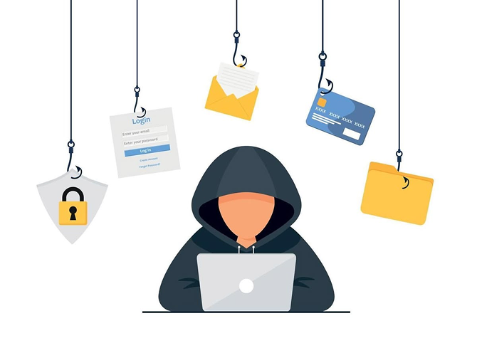
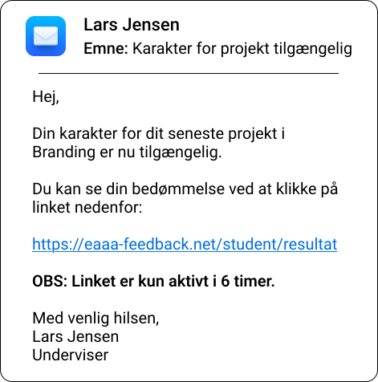

Din indbakke er fuld af fælder - kan du spotte dem?

I din hverdag som studerende tikker der hele tiden nye beskeder ind. E-mails, notifikationer og beskeder fra forskellige afsendere er en fast del af din digitale rutine. Nogle er legitime, andre er forsøg på svindel.
Phishing er et cyberangreb, hvor svindlere udgiver sig for at være en troværdig afsender for at få dig til at klikke på links, åbne filer eller dele personlige oplysninger.
Når du navigerer hurtigt mellem mange digitale platforme, kan små advarselstegn let overses. Det er præcis den adfærd, svindlere udnytter ved at skabe tidspres, der får dig til at handle hurtigt.
Træd ind i scenariet - dine valg afgør udfaldet
Du er studerende på et erhvervsakademi og arbejder på din computer.
Du har for nylig afleveret et projekt og venter på din karakter.
Pludselig tikker der en ny e-mail ind fra din underviser.

Da du åbner mailen, lægger du mærke til flere ting:
- Mailen beder dig klikke på et link for at se din karakter
- Linket ligner ikke din normale studieplatform
- Der er en tidsbegrænsning på 6 timer for at tilgå resultatet
Hvad gør du?
Åh nej!
Du har klikket på linket. Det er en phishing mail!
- Dine oplysninger kan være kompromitterede
- Skadelig software kan være installeret
Du bør handle hurtigt:
- Afbryd internetforbindelsen
- Bloker afsender
- Skift din adgangskode fra en sikker enhed
- Kontakt IT-support og få din computer renset
Godt tænkt!
Du opdager, at afsenderen ikke matcher hverken din undervisers eller skolens domæne.
Du beslutter at slette mailen.
Godt valgt!
Ved at tjekke afsenderen har du undgået phishing og beskyttet din konto.
Godt valgt!
Mailen slettes og din konto er sikker.
Senere samme dag klikker en af dine medstuderende på linket, og bliver ramt af phishing.
Kilder
Nedenfor finder du de faglige kilder, som indholdet på denne hjemmeside bygger på:
- Microsoft Security, n.d., Hvad er Phishing? Online. Tilgængelig fra https://www.microsoft.com/da-dk/security/business/security-101/what-is-phishing (Hentet 27. april 2026)
- Lindgren Rathsach, L., 2025, Fupmails: Sådan gennemskuer du phishing på mail. Online. Tilgængelig fra https://taenk.dk/forbrugerliv/elektronik-og-digitale-tjenester/fupmails-saadan-gennemskuer-du-dem (Hentet 27. april 2026)
- Thiel, A.-S, 2025, Ny rapport: Markant flere danskere rammes af digital svindel. Online. Tilgængelig fra https://via.ritzau.dk/pressemeddelelse/14375246/ny-rapport-markant-flere-danskere-rammes-af-digital-svindel?publisherId=9329615&lang=da (Hentet 27. april 2026)
- Forbrug.dk, 2021, Phishing og falske beskeder. Online. Tilgængelig fra https://forbrug.dk/emner/reklamer-og-spam/phishing (Hentet 27.april 2026)